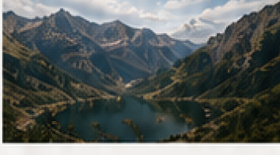

Aventuras
Destinos y rutas
Destinos y rutas
sin filtros
Los destinos y rutas que explora Cheno Aventuras: calas, cumbres, pueblos y algún susto, contados sin filtros.
Mapa de aventuras


Lugares explorados
Cola de Caballo
Ordesa · Huesca · circular 18 kmAltea
Alicante · casco antiguoBatería de Castillitos
Cartagena · MurciaCala provisional
Costa · pendiente de datos
Ibones del Pirineo
Huesca · alta montañaRuta camper Sur
Costa · varios díasRutas
Itinerarios y guías para todos los niveles.
Consejos
Tips prácticos para viajar mejor.
Aventuras
Experiencias únicas en la naturaleza.
Vídeos
Contenido real, sin filtros.
Placeholder: fichas de ejemplo. Cada una enlazará a su ruta, mapa y galería cuando el contenido esté listo.